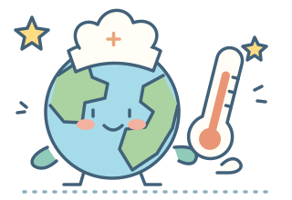

우리들의 과학 탐구 · 열과 우리 생활
온도를 지켜라!
단열은 열을 만들까요, 열의 이동을 늦출까요?
조건을 바꾸고, 비교하고, 근거를 찾아보세요.

초등 5·6학년군예상 → 실험 → 설명2022 개정 교육과정
02
변화를 관찰해요
준비 완료주위 온도 22°C열은 물에서 주위로 이동해요
A 기준 컵
↑ ↑ ↑
60.0°C
단열층 없음
VS
B 내가 바꾼 컵
↑ ↑ ↑
60.0°C
단열층 2겹 · 뚜껑 없음
실험 시간 0분 / 20분
시간에 따른 온도
A 컵B 컵
시작 온도와 물의 양은 같아요. 실험 후 시간 막대를 움직여 비교할 수 있어요.
03
근거로 설명해요
실험을 마치면 예상과 결과를 비교하고, 나만의 탐구 카드를 완성할 수 있어요.
관찰한 결과